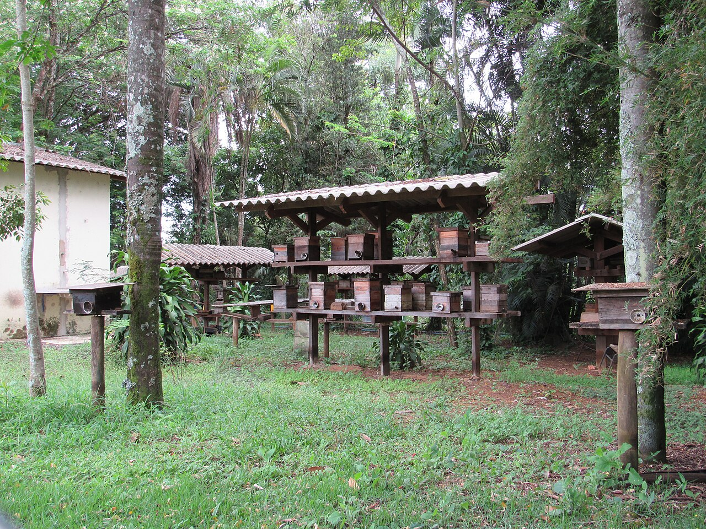

Como instalar caixas e atrair abelhas para sua propriedade

Para atrair abelhas sem ferrão, não basta apenas instalar caixas — é preciso criar um ambiente completo que favoreça sua presença.
As caixas racionais devem ser instaladas em locais com sombra, protegidas do sol direto e de ventos fortes, garantindo estabilidade térmica.
O ideal é posicioná-las próximas a áreas de vegetação nativa ou Reserva Legal, onde há maior diversidade de plantas.
O factor mais importante para atrair abelhas é a disponibilidade de alimento. Ambientes com flores durante o ano inteiro têm maior chance de serem ocupados naturalmente.
Também é possível realizar a transferência de enxames encontrados na natureza para as caixas, de forma controlada e sustentável.
Espécies como jataí e mandaçaia podem ocupar o local sozinhas quando encontram condições ideais.
Com o tempo, a propriedade se transforma em um ambiente favorável à presença de abelhas, aumentando também a produtividade agrícola.
De acordo com o Guia de Atração de Abelhas Nativas da Embrapa (2022), recomenda‑se utilizar iscas de melado de cana e misturas de óleos essenciais (alecrim, citronela) para incentivar a ocupação das caixas, além de manter áreas de flores nativas próximas. (Fonte: EMBRAPA, 2022)